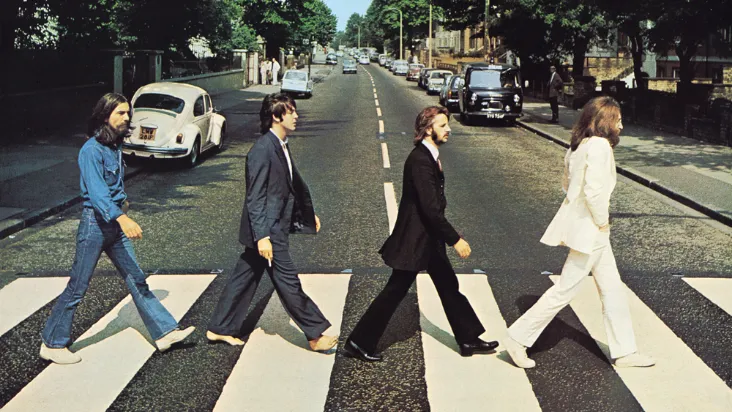
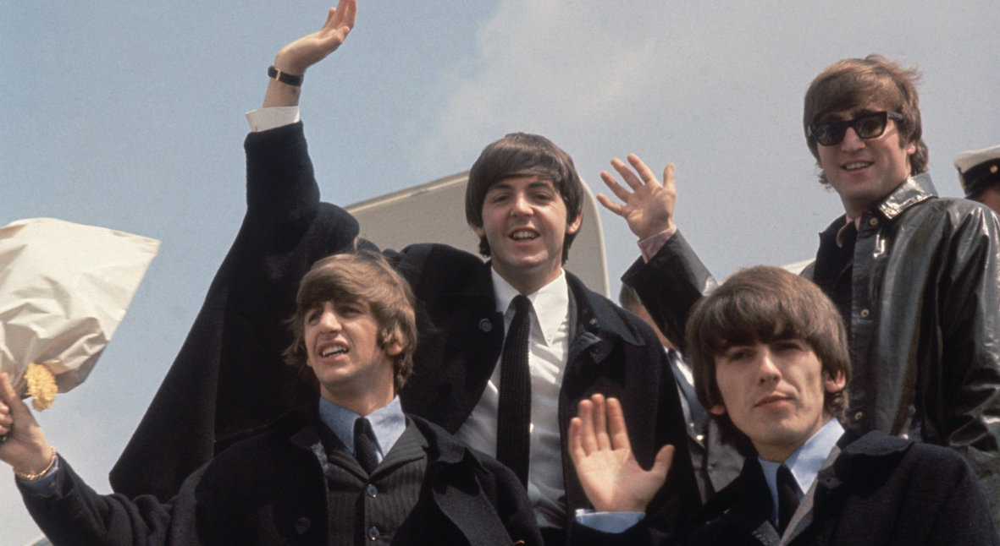
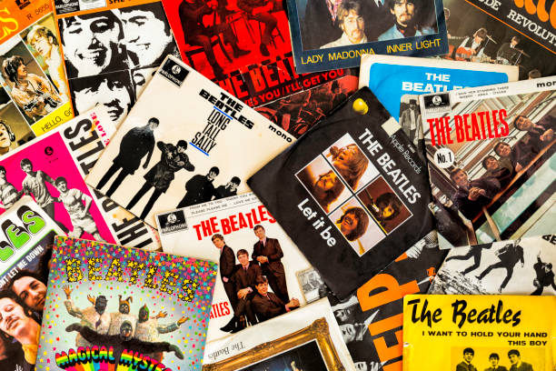

О Битлз
The Beatles — английская рок-группа, образованная в Ливерпуле в 1960 году. Они считаются одной из самых влиятельных групп всех времён.
История создания и состав Beatles
Биография популярной группы Beatles, работавшей в жанре рок, поп и мерсибит, началась в 1960 г. Её основателем и солистом был Джон Леннон — музыкант и мультиинструменталист, который, помимо гитары и бас-гитары, умел играть на губной гармонике, клавишных и фортепиано. Он же отвечал за музыкальные эффекты, которые добавляли песням британского рок ансамбля изюминки. Остальные участники группы также по очереди отвечали за вокал, бэк-вокал и музыкальное сопровождение. Наибольшей популярностью у поклонниц пользовался солист Пол Маккартни, успешно освоивший некоторые духовые инструменты. Ринго Старр, помимо вокала и бэк-вокала, отвечал за перкуссию и ударные инструменты, Джордж Харрисон — за ситар, перкуссионные инструменты и эффекты в музыке.
Откуда родом участники Beatles
Один из величайших музыкальных коллективов XX века был основан в Ливерпуле — крупном портовом городе Великобритании. Именно у его берегов швартовались судна с иностранными моряками, привозившими с собой из-за океана новую музыку. Если бы не атмосфера, которая благоприятствовала развитию творческих способностей, участники Битлз могли стать простыми рабочими, а их биографии были бы более прозаичными. Например, отец солиста и создателя группы Джона Леннона работал стюардом, отец Джорджа Харрисона был моряком, а Ринго Старра — пекарем. Только родители Пола Маккартни увлекались музыкой и регулярно дарили сыну музыкальные инструменты. Несмотря на то, что первые концерты Битлз были в немецком портовом городе Гамбург, их родиной является Ливерпуль. Именно он закрепил за ними неофициальное название «ливерпульская четверка».
Топ-7 интересных фактов о Beatles
Изначально Джон Леннон назвал группу Quarrymen. Название первого британского сингла «From Me To You» отсылает к рубрике журнала NME. Джон Леннон и Пол Маккартни являются авторами песни «I Wanna Be Your Man» Rolling Stones, которые всегда считались их главными конкурентами. Только в США Битлз продали 178 млн альбомов. Beatles — единственный коллектив, 20 песен которых возглавляли хит-парад Billboard Hot 100. Весь состав ливерпульской четверки должен был сняться в фильме «Властелин колец», режиссером которого назначили Стэнли Кубрика. Однако от этой идеи впоследствии отказались. Музыку Битлов используют в качестве терапии для детей с аутизмом и другими психическими нарушениями.
Распад и попытки воссоединения
1968-1970 гг. называют периодом распада Битлз. К тому моменту среди поклонников уже начали ходить слухи, а сами музыканты давали на вопросы о будущем коллектива двусмысленные ответы. В 1969 г. солист, Джон Леннон, официально заявил, что уходит в сольное творчество. Однако до сих пор никто точно не знает, что стало причиной распада. Пол Маккартни утверждает, что это случилось из-за «деловых и личных разногласий». Одна часть состава хотела творческого развития, другая — желала больше времени проводить с семьей. В 1970 г. Маккартни, Харрисон и Старр сыграли вместе на свадьбе Эрика Клэптона. Тогда они были ближе всего к воссоединению, которого в итоге так и не случилось. В самом начале своей биографии музыканты Битлз поставили перед собой цель — стать лучшим рок коллективом всех времен и народов. Сам Джон Леннон считал, что именно цель и уверенность в своих силах помогла им добиться мирового признания. Несмотря на то, что история самой группы закончилась, она до сих пор влияет на жизни миллионов. И пока в мире есть поклонники хорошей музыки, «Yesterday», «Let It Be» и «Girl» будут радовать слушателей.

Популярные альбомы
- 1. Abbey Road
- 2. Sgt. Pepper's Lonely Hearts Club Band
- 3. The White Album
- 4. Rubber Soul
- 5. Please Please Me

Контакты
Электронная почта: info@thebeatles.com
Социальные сети: @thebeatles